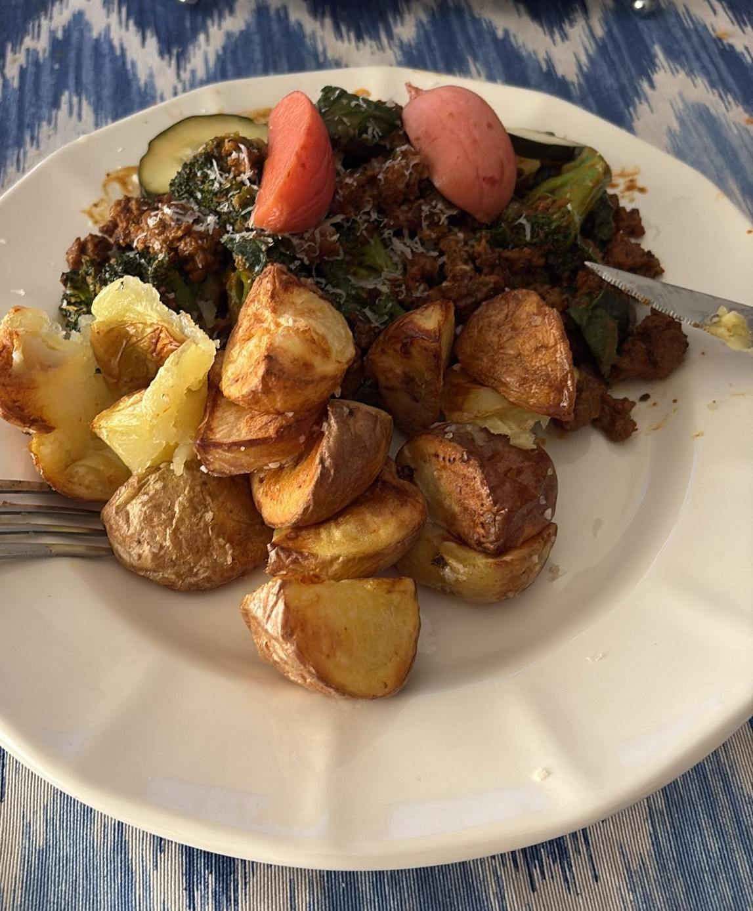

Lunes
Carne picada con brocoli y patatas de guarnición
Ingredientes
- Carne picada
- Brocoli
- Patatas de guarnición
Elaboración
- Hacer la carne picada en una sarten de acero inoxidable para dorarla por fuera.
- Raspar con una espatula los restos de la carne y añadir con aceite el brocoli.
- una vez este blando el brocoli añadimos la pasta de curry rojo y el curry para dorarlo y una vez dorados añadimos la nata.
- Pasados unos 5 minutos apagamos el fuego y añadimos parmesano por encima.

Volver